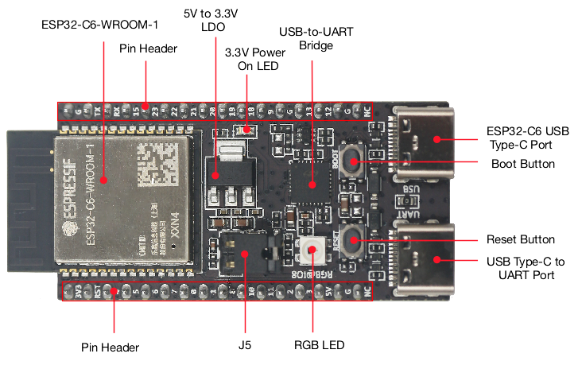
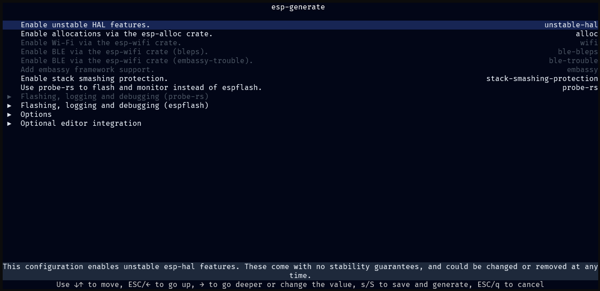
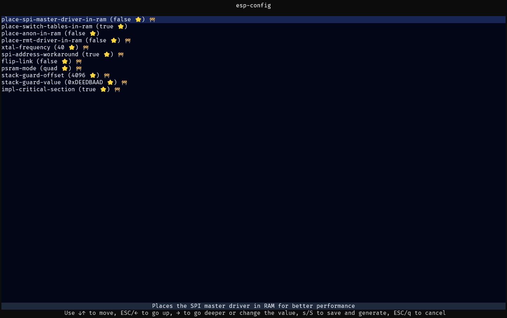
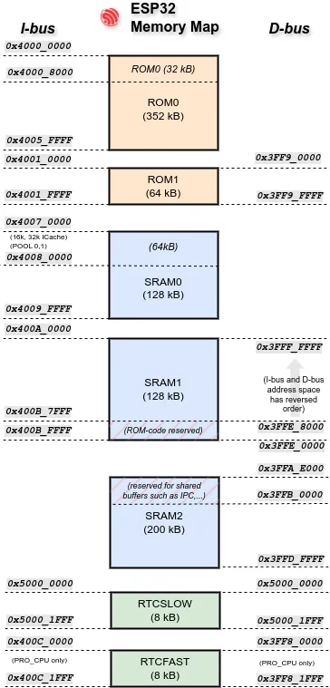

前言
欢迎阅读这份在乐鑫产品上使用 Rust 进行嵌入式开发的指南。本书旨在帮助你入门，并熟悉我们的工具和生态系统。我们将介绍软件栈的结构，并带你了解项目生成和工具使用的基本流程。读完本书后，你就可以通过参考文档和外部培训资源，进一步探索更深入的内容。
这本书适合谁
本书面向对嵌入式开发感兴趣的 Rust 开发者，即使你没有嵌入式系统的开发经验，也可以阅读。熟悉一些底层编程概念会有所帮助，但我们会在涉及这些概念时介绍其中的关键思想。如果你想补充基础知识，可以学习补充资源中的内容。
稳定性与可用性
我们努力保持稳定性，但随着 API 改进、性能优化和新功能的引入，你仍应预期会有定期的修改。已经稳定的模块会遵循语义化版本规范（SemVer），不会引入破坏性变更。不过，esp-hal 的部分组件和某些驱动等 unstable 功能仍在积极开发中，不受 SemVer 保证的约束。这意味着，使用这些 unstable 组件时，简单的一次 cargo update 就可能导致项目无法正常工作，类似于使用 Rust 的 nightly 编译器。这种不稳定性在整个仍在快速发展的 Rust 嵌入式生态中很常见。请留意变更，并密切跟踪依赖项。对于所有主要 crate，我们都提供版本间的迁移指南，帮助你保持更新。
补充资源
如果你不熟悉本书涉及的某些概念，或想深入了解特定主题，以下资源可能会有所帮助：
| 资源 | 描述 |
|---|---|
| The Rust Programming Language | 如果你不熟悉 Rust，可以阅读这本书。 |
| The Embedded Rust Book | Rust 嵌入式工作组提供的资源。 |
Embedded Rust (no_std) on Espressif | 在乐鑫 SoC 上使用 no_std 的指南。 |
| Awesome ESP Rust | 在乐鑫产品上使用 Rust 开发的相关资源列表。 |
| Awesome Embedded Rust | 与嵌入式 Rust 和底层编程相关的资源列表，包括一些实用的 crate。 |
为本书做出贡献
本书的工作在这个仓库中进行协调。
如果你在按照说明操作时遇到困难，或发现某些章节不够清晰，请在 issue 追踪器中反馈。欢迎通过 Pull Request 修正拼写错误或改进表述！
支持与社区
如果你需要帮助、有问题，或想讨论与 esp-rs 相关的话题，欢迎加入 Matrix 上的社区聊天室。
我们希望本书能帮助你积累知识和信心，在乐鑫产品上使用 Rust 构建健壮、高效且安全的嵌入式应用。开始吧！
介绍
在这一部分中，我们将介绍两个重要主题，为你在乐鑫设备上使用 Rust 打下基础：
-
硬件概览：了解乐鑫生态系统，包括不同的 SoC 系列、架构和开发板。这些知识有助于你为项目选择合适的芯片，并了解即将编程控制的底层硬件。
-
辅助 crate 概览：探索 crate 生态系统。这些 crate 提供了从内存分配到无线通信的各种基础组件。
了解硬件能力和软件生态系统后，你就可以继续学习入门章节中的实践内容，配置开发环境，并创建你的第一个应用程序。
让我们先了解将要使用的硬件。
硬件概览
esp-rs 组织下的 crate 支持 ESP32、ESP32-S、ESP32-C 和 ESP32-H 系列 SoC。
各款 SoC 既有独特的功能，也有一些共同的特性。请使用乐鑫产品选型工具，为你的项目选择合适的芯片。
乐鑫的产品采用两种不同的系统架构：
这里不展开介绍这两种架构的细节或差异。Rust 官方对两者的支持情况不同。Rust 尚未正式支持 Xtensa，原因是 Rust 使用 LLVM 作为编译器基础设施的一部分，而 LLVM 尚不支持 Xtensa。因此，我们维护了 LLVM 和 Rust 编译器的定制分支，加入了对 Xtensa 的支持，并积极推动这些修改合并到上游，以在未来获得官方支持。
Note
我们正在积极推动分支中的修改合并到上游。目前的进展如下：
- LLVM 分支：最近取得了显著进展。详情请参阅跟踪 issue。
- Rust 编译器分支：我们已提交所有可行的 Xtensa 补丁。后续进展取决于这些修改合并到 LLVM 上游的情况。
你可以参阅技术文档，了解不同 SoC 的更多信息。
Note
esp-hal不支持 ESP8266。不过，它支持 ESP32-C2（ESP8684）和 ESP32-C3（ESP8685）。其中，ESP32-C3 与 ESP8266 引脚兼容，可以作为合适的直接替代品。
了解乐鑫开发板
以 ESP32-C6-DevKitC-1 为例。这是一款基于 ESP32-C6 的开发板，包含以下组件：

- ESP32-C6-WROOM-1 模块：
- 支持 Wi-Fi、BLE 和 IEEE 802.15.4。
- 8 MB SPI flash。
- 可供使用的 GPIO 引脚。
- 2 个按钮：Boot 和 Reset。
- Boot 按钮：下载按钮。按住 Boot，再按下 Reset，即可进入固件下载模式，通过串口下载固件。
- 详情请参阅启动模式选择。
- Reset 按钮：复位设备。
- Boot 按钮：下载按钮。按住 Boot，再按下 Reset，即可进入固件下载模式，通过串口下载固件。
- 2 个 USB-C 接口：
- USB-C 转 UART 接口：用于给开发板供电、向芯片烧录应用程序，以及通过板载 USB 转 UART 桥接器与 ESP32-C6 芯片通信。
- USB-C 接口：用于给开发板供电、向芯片烧录应用程序、通过 USB 协议与芯片通信，以及进行 JTAG 调试。
- RGB LED：由 GPIO8 驱动的可寻址 RGB LED。
- 注意，这不是普通的 RGB LED，而是 WS2812B LED。
辅助 crate 概览
在详细介绍编写应用程序所需的各种包和概念之前，先大致了解整个生态系统会有所帮助。这既包括 esp-hal 生态，也包括更广泛的嵌入式 Rust 生态。
esp-hal 生态系统
开展项目的第一步是创建项目，主要方式是使用 esp-generate。你可以在介绍此工具的章节中了解更多信息。
esp-hal 是使用 Rust 开发乐鑫芯片的核心 crate。通过它，你可以完成芯片的基本初始化，并访问芯片上的外设驱动。针对所选芯片的完整 esp-hal 文档会明确说明可用的外设，以及各外设驱动的稳定性。
你可能还需要使用芯片的高级功能，例如网络和连接能力。这部分由生态系统中的 esp-radio 负责，它整合了各种乐鑫产品上可用的通信协议驱动：Wi-Fi、BLE、esp-now，以及用于底层通信的 IEEE 802.15.4。各芯片的详细信息可在 esp-radio 子仓库中找到。需要注意，无线功能要求协议栈在后台持续运行，涉及定时器、中断和状态机等。esp-radio 依赖 esp-radio-rtos-driver 的实现，该驱动定义了协议栈可靠运行所需的调度和运行时接口。esp-rtos 是我们提供并支持的默认后端；原则上，你也可以将它替换为其他驱动实现。在启用相应的模板选项时，esp-generate 会自动加入 esp-rtos。
如果需要更深入地管理芯片内存，或在 no_std 中使用 alloc crate 提供的、需要堆分配的集合类型，可以使用 esp-alloc。本书有专门的章节介绍它。
下表简要介绍了 esp-hal 生态系统中的所有 crate 及其用途：
| Crate | 描述 | 稳定性 |
|---|---|---|
esp-alloc | 内存分配工具。 | 不稳定 |
esp-backtrace | 提供回溯支持。 | 不稳定 |
esp-bootloader-esp-idf | 为 ESP-IDF 二级 bootloader 提供额外支持，包括 OTA。 | 不稳定 |
esp-build | 用于 esp-hal 和其他相关包的构建工具，供构建脚本使用。 | 不稳定 |
esp-config | 配置系统。 | 不稳定 |
esp-hal | 适用于所有乐鑫 ESP32 设备的裸机（no_std）HAL。 | 稳定* |
esp-hal-proc-macros | 用于 esp-hal 系列 HAL 包的过程宏。 | 不稳定 |
esp-lp-hal | 适用于部分乐鑫设备上的低功耗和超低功耗核心的裸机（no_std）HAL。 | 不稳定 |
esp-metadata | 乐鑫设备的元数据，主要供构建脚本使用。 | 不稳定 |
esp-preempt | 线程与支持线程的同步原语，主要用于 esp-radio。 | 不稳定 |
esp-println | 乐鑫设备的打印和日志功能。 | 不稳定 |
esp-riscv-rt | 乐鑫 RISC-V CPU 的最小启动代码和运行时。 | 不稳定 |
esp-rom-sys | ROM 代码支持。 | 不稳定 |
esp-rtos | esp-radio 的调度器实现，以及 esp-hal 的 embassy 支持。 | 不稳定 |
esp-sync | 乐鑫设备的同步原语。 | 不稳定 |
esp-storage | 乐鑫设备的存储工具。 | 不稳定 |
esp-radio | 乐鑫设备的 Wi-Fi、BLE、IEEE 802.15.4 和 ESP-NOW 功能。 | 不稳定 |
xtensa-lx | 对 Xtensa LX 处理器和外设的底层访问。 | 不稳定 |
xtensa-lx-rt | Xtensa LX CPU 的最小启动代码和运行时。 | 不稳定 |
Note
esp-hal内部各外设驱动的稳定性有所不同。请参阅外设支持部分，了解各外设的稳定性详情。
你可以在 esp-rs 文档中找到这些包的详细信息。
与嵌入式 Rust 生态系统集成
嵌入式 Rust 领域最常用的硬件抽象层是 embedded-hal。它为多种外设提供了 trait，使你可以编写不依赖特定 HAL 的设备驱动。esp-hal 在其驱动中实现了这些 trait。此外，我们也实现了嵌入式 Rust 领域中其他 crate 提供的各种 trait，例如为随机数生成器（RNG）外设实现的 rand_core trait，以及 embedded-io trait。后者是面向 no_std 应用程序、与 std::io trait 对应的接口。
入门
本章将带你配置开发环境，以便在乐鑫设备上使用 Rust 构建应用程序。
工具链安装
工具链安装
Rust 安装
确保你已经安装了 Rust。如果没有，请参阅 rustup 网站上的说明。
Warning
使用基于 Unix 的系统时，通过系统的包管理器（例如
brew、apt、dnf等）安装 Rust 可能导致各种问题和兼容性冲突，因此最好使用 rustup。
使用 Windows 时，请确保你已安装下面列出的 ABI 之一。有关更多详细信息，请参阅 The rustup book 中的 Windows 章节。
-
MSVC：推荐的 ABI，包含在
rustup的默认依赖项列表中。使用此 ABI 可以与 Visual Studio 生成的软件实现互操作。如果不确定该选哪个，就使用它。
-
GNU：GCC 工具链使用的 ABI。你可以自行安装它，以便与使用 MinGW/MSYS2 工具链构建的软件实现互操作。
另请参阅其他安装方案。
RISC-V 设备
要为基于 RISC-V 架构的乐鑫芯片构建 Rust 应用程序（如果不确定设备采用哪种架构，请参阅硬件概览），请执行以下步骤：
-
安装适当的工具链以及
rust-src组件：- 既可以使用
stable，也可以使用nightly：
或rustup toolchain install stable --component rust-srcrustup toolchain install nightly --component rust-src
Note
rustfmt、clippy和rust-analyzer等其他组件并非必需，但强烈推荐安装。 - 既可以使用
-
安装目标：
rustup target add riscv32imc-unknown-none-elf # For ESP32-C2 and ESP32-C3 rustup target add riscv32imac-unknown-none-elf # For ESP32-C6 and ESP32-H2
如果你_不打算_使用 ESP32、ESP32-S2 或 ESP32-S3，工具链安装就已经完成，可以跳到工具安装章节。
Xtensa 设备
如硬件概览所述，ESP32、ESP32-S2 和 ESP32-S3 采用 Xtensa 架构。如果要为这些芯片开发，目前需要使用 Rust 编译器的分支版本。
espup 是一款工具，用于简化为这些目标开发 Rust 应用程序所需的工具链安装和维护过程。
- 安装
espup：
也可以直接下载预编译好的发行二进制文件，或使用cargo install espup --lockedcargo-binstall。 - 运行以下命令，为所有受支持的乐鑫目标安装全部必需的工具链：
espup install - 在 Unix 系统上配置环境变量：请参阅
espupREADME 中介绍的不同方法。Windows 用户无需进行其他操作。
espup 安装了什么
为了启用对乐鑫目标的支持，espup 安装了以下工具：
- 乐鑫 Rust 分支，支持乐鑫目标。
stable工具链，支持 RISC-V 目标。- LLVM 分支，支持 Xtensa 目标。
- GCC 工具链，用于链接最终的二进制文件。
分支编译器能与标准 Rust 编译器共存，允许在一个系统上同时安装两者。可以使用任意一种 override 方法来调用分支编译器。
工具安装
工具链就绪后，就可以安装一些额外的工具，以简化和改善乐鑫芯片上的 Rust 应用程序开发过程。
esp-generate
esp-generate 是一个项目生成工具，可以帮助你创建能够正常工作的项目，并预先应用大部分所需配置。
安装
要安装 esp-generate，执行：
cargo install esp-generate --locked
你也可以直接下载预编译好的发行二进制文件，或使用 cargo-binstall。
esp-generate 配置了什么
esp-generate 不仅负责选择依赖项，还会根据所选的模板选项，应用一组已知的 crate 和 feature 组合，从而减少创建可用项目时所需的手动配置。
选择模板选项后，esp-generate 会更新生成的 Cargo.toml，加入这些选项所需的 crate 和 Cargo feature。模板会在确保生成的应用程序骨架能够按照所选配置构建和运行的前提下，尽量精简依赖项列表，使你无需手动配置依赖项就能成功完成首次构建。
如果需要进一步了解相关细节，辅助 crate章节介绍了无线、异步和网络选项与各个 crate 之间的对应关系。
一些选项的配置相互关联。例如，日志可以通过 defmt 或 log 配合相应的前端进行配置。某些 crate 也会作为标准基础配置的一部分加入项目，因为它们支持常见的嵌入式开发流程。例如，esp-bootloader-esp-idf 提供对二级 bootloader 的额外支持；critical-section 也会被加入，因为许多嵌入式 crate 依赖它来实现中断临界区。
Tip
每个版本的
esp-generate都对应特定版本的生态系统 crate。如果希望使用最新发布的版本，请记得更新esp-generate。
espflash
espflash 是为乐鑫 SoC 和模块设计的串口烧录工具，原生支持所有与 esp-hal 兼容的芯片。
安装
要安装 espflash，执行以下命令：
cargo install espflash --locked
也可以使用 cargo-binstall 从发行版本下载预编译的程序并使用：
cargo binstall espflash
Note
espflash默认使用的波特率是 115200，你可以提高波特率来加快烧录速度。 最简单的方法是设置ESPFLASH_BAUD环境变量。
probe-rs
probe-rs 项目提供了一套工具，可以通过各种调试探针与嵌入式微控制器交互，并对乐鑫芯片提供了完善的支持。
除了烧录和监控，它还提供完善的调试功能。
如果不确定现在是否需要它，可以暂时跳过安装，以后再回来安装。
带有 USB-JTAG-SERIAL 外设的乐鑫设备无需额外的硬件，就可以使用 probe-rs。没有这个外设的设备则需要 ESP-Prog 等外部编程器。
Note
ESP32-C6、ESP32-H2、ESP32-S3 和 ESP32-C3（修订版 0.3 或更新版本）提供
USB-JTAG-SERIAL外设。
安装
esp-config（可选）
esp-config 是一个通过终端用户界面（TUI）编辑配置选项的工具。使用它完全是可选的；有关配置文件的组织方式，以及如何不借助 TUI 手动编辑配置文件，请参阅配置章节。
安装
要安装 esp-config，执行：
cargo install esp-config --features=tui --locked
使用 esp-generate
安装好所有必需的工具后，你就可以创建第一个在乐鑫芯片上运行的 Rust 项目了。
生成项目
首先，运行以下命令，启动交互式配置工具：
esp-generate
esp-generate 会提示你选择芯片并输入项目名称，然后进入 TUI，通过选项配置项目生成过程。

根据项目需要调整选项。请参阅 README 中的可用选项部分。TUI 底部会显示各选项的简短说明。
烧录选项
有两种工具可以将代码烧录到目标设备：
espflash：默认的烧录工具。probe-rs：启用基于实时传输（RTT）的选项，并支持片上调试。- 生成项目时，请确保启用
Use probe-rs to flash and monitor instead of espflash.（probe-rs选项）。
- 生成项目时，请确保启用
Tip
使用
espflash时，可以在Flashing, logging and debugging (espflash)下启用Use the log crate to print messages.和Use esp-backtrace as the panic handler.。
Tip
使用
probe-rs而不是espflash时，可以在Flashing, logging and debugging (probe-rs)下启用Use defmt to print messages.和Use panic-rtt-target as the panic handler.。
执行项目生成
准备好后，在 TUI 的根界面按下 s 即可生成项目。保存项目时，工具会检查必需工具和可选工具是否已安装，并显示结果。根据生成选项，它可能会提示你安装之前遗漏的工具，或现在需要的新工具。
运行代码
只需执行以下命令，就能让代码运行起来：
cargo run --release
此命令会编译应用程序，将它烧录到目标设备，并开始监控日志输出。
🎉 恭喜，你已经成功将第一个 Rust 程序烧录到 ESP32 上！
现在，你可以继续深入探索 ESP32 平台上的 Rust 开发。
使用 esp-config 的 TUI（可选）
如果已经安装此工具，可以在项目目录中运行 esp-config，启动后的界面如下：

如果工具无法自动识别，你也可以指定目标芯片和要使用的配置文件。
对于通过 esp-generate 生成的项目，通常不需要这样做。
有关配置文件的组织方式，以及如何手动编辑它们，请参阅配置章节。
应用开发
现在你已经成功运行了第一个程序，让我们补充一些知识，并介绍常见嵌入式开发实践中的一些可选方案。
应用启动与 bootloader
许多嵌入式设备上电后，会直接从 flash 中的某个地址开始执行代码。乐鑫芯片的启动过程稍微复杂一些，需要先设置 flash、缓存，并完成其他一些操作。为此，我们需要一个 bootloader：它是一个简单的应用程序，负责完成上述设置，然后跳转到其他代码开始执行。
乐鑫设备使用两级 bootloader 来启动应用程序：
- 一级 bootloader（ROM bootloader）：设置与架构相关的寄存器，检查启动模式和复位原因，并加载二级 bootloader。这个 bootloader 已固化在 ROM 中，是 SoC 的一部分，因此无需烧录，也无法修改。
- 二级 bootloader：加载你的应用程序，并设置内存（RAM、PSRAM 或 flash）。
虽然从_技术上_讲二级 bootloader 并非必需，但仍建议使用。它支持 OTA（一级 bootloader 只能从 flash 中的固定偏移处加载应用程序），并且可以启用 flash 加密和安全启动。详情请参阅 OTA 章节。
有关启动过程的更多信息，请参阅 ESP-IDF 文档。不过，其中某些内容可能仅适用于 ESP-IDF。
二级 bootloader
目前仅支持将 ESP-IDF bootloader 用作二级 bootloader。未来这一情况会有所改变，因为我们计划加入对 MCUBOOT 等其他 bootloader 的支持。
ESP-IDF bootloader
它使用 ESP 镜像格式，详情请参阅 ESP-IDF 文档。ESP-IDF bootloader 配合分区表，确定二进制文件的位置。
分区表
乐鑫设备的 flash 可以存储多个应用程序，以及校准数据、文件系统和参数存储等各种数据。为了管理这些内容，需要将分区表烧录到设备上的默认偏移处。
ESP-IDF 二级 bootloader 通过查看分区表，确定二进制文件的位置。分区表中的每个条目都有名称（标签）、类型（app、data 或其他类型）、子类型，以及分区在 flash 中的偏移。
使用 espflash 时，如果没有提供二级 bootloader 或分区表，espflash 会使用默认的 bootloader 和分区表；你也可以创建自定义分区表。
构建自定义 ESP-IDF bootloader
espflash 和 cargo-espflash 包含使用默认设置编译的预构建 ESP-IDF bootloader，无需额外配置即可开始使用。不过，如果需要更高级的功能或自定义设置，就需要自行构建 bootloader，以满足具体需求。
要构建自定义 ESP-IDF bootloader：
- 安装 ESP-IDF。
- 创建一个新项目，或进入已有项目。
- 最简单的方式是使用
esp-idf/examples目录中的任意示例。
- 最简单的方式是使用
- 使用
idf.py menuconfig或编辑sdkconfig文件，对 bootloader 进行所需的修改。- 详情请参阅配置选项参考。
- 使用
idf.py set-target <CHIP_TARGET> build bootloader构建 bootloader。- 生成的 bootloader 二进制文件位于
build/bootloader/bootloader.bin。
- 生成的 bootloader 二进制文件位于
- 通过
--bootloader参数或配置文件，在espflash/cargo-espflash中使用构建好的 bootloader 二进制文件。
配置
esp-config crate 为 esp-* crate 提供了一种管理额外配置的方式，这些配置不适合通过 Cargo feature 表达。
查找可用的配置
完整的可用选项列表位于相应 crate 的文档中。例如，这里列出了 ESP32-C6 的 esp-hal 配置选项。
使用方法
创建项目时，你可能需要配置一些额外的高级参数，例如将外设放在 RAM 中以提高性能，或更改某个 crate 的 RX/TX 队列大小。为此，你需要调整 esp-config 提供的配置项。
你可以使用以下两种方式：
-
设置环境变量。例如，在
esp-hal中，如果想将匿名符号放在 RAM 中，需要创建名为ESP_HAL_CONFIG_PLACE_ANON_IN_RAM的环境变量，并修改其值。该配置项的默认值为false。 -
在
.cargo/config.toml中设置所需参数（这种方式同样会设置环境变量）：# .cargo/config.toml [env] ESP_HAL_CONFIG_PLACE_ANON_IN_RAM="true"修改
.cargo/config.toml的[env]部分后，建议清理构建产物后重新构建。
Note
在命令行中设置的环境变量优先于
[env]部分。
多套配置
根据应用程序的需求，你可能希望在同一个项目中支持不同的开发板、芯片或目标。这时，各目标可能需要设置不同的选项。我们建议采用以下配置方式：
- 一个基础的
.cargo/config.toml，包含常用的构建参数（无论是否传入其他--config参数，Cargo _始终_会读取并遵循这个文件）。 - 在
.cargo/下为每套配置准备一个配置文件。 - （推荐）设置一个 Cargo 别名，用于按指定配置构建，例如
run-config-a = "run --config=./.cargo/config_a.toml --release"。简单情况下，也可以直接在命令行中传入--config。
请参阅这个示例仓库，进一步了解使用多套配置的项目。
定义自己的配置选项
你可能也想在项目中定义一些配置选项。为此，需要在 esp_config.yml 文件中以声明的方式定义这些选项、默认值，以及其他参数和检查。详情请参阅项目仓库中的定义配置选项部分。
日志
日志是嵌入式系统开发的重要组成部分，它使系统行为可观察，并帮助调试和监控。在 Rust 生态系统中，常用的两种主要日志框架是 defmt 和 log。
生成项目时，无论你选择下面的哪一种工具，esp-generate 都会确保配置正确，你只需根据自己的需求调整所使用的日志工具。
defmt
defmt 是一个高效的日志框架，专为嵌入式系统等资源受限的环境设计。它使用紧凑的二进制编码日志消息，减少了传统字符串日志带来的开销。更多信息请参阅 defmt 文档。在乐鑫芯片上，我们推荐将 defmt 与 probe-rs 配合使用，以取得最佳效果。
log
log crate 是 Rust 社区广泛采用的日志门面。它定义了一组宏（info!、warn!、error! 等），用于记录不同级别的日志消息。我们在 esp-println 中提供了一个 logger 实现；如果需要，你也可以自行实现 logger。
内存分配
在 no_std 环境中，可以选择使用 alloc crate 进行堆分配，从而使用 Vec、Box 等常用 Rust 类型，以及其他需要堆分配的集合。有时，你希望使用的某个依赖项也可能要求使用 alloc。
我们提供了自己的 no_std 堆分配器 esp-alloc。不过，在启用它之前，你应该先了解为什么需要堆分配，以及其中的取舍。
为什么不使用堆？
虽然堆分配更加灵活，但它也有一些代价：
- 碎片化：随着时间推移，动态分配可能导致_碎片化_。即使剩余内存总量足够，零散的小块内存也可能使大块内存无法分配。这可能导致难以察觉的运行时故障。
- 运行时开销：分配和释放内存需要计算成本，所选分配器本身也可能带来额外开销。
可配置的内存布局与回收的 RAM
一些乐鑫芯片的内存映射并不连续，并非所有物理 RAM 都可以作为一个连续的堆使用。例如，某些区域保留给 ROM 代码使用，不能被覆盖。下面以 ESP32 的内存布局为例。

此外，二级 bootloader 在启动过程中会使用一部分内存。这部分内存不能用作栈，但在进入主应用程序后可以用作堆。你可以在堆分配器声明中使用 #[ram(reclaimed)] 宏，利用这部分原本未被使用的内存。
#![allow(unused)]
fn main() {
// Use 64kB in dram2_seg for the heap, which is otherwise unused.
heap_allocator!(#[ram(reclaimed)] size: 64000);
}PSRAM
我们的芯片有几百千字节的内部 RAM，对某些应用来说可能不够。一些乐鑫芯片可以通过虚拟地址访问外部 PSRAM（伪静态 RAM）。在满足某些限制的情况下，外部内存可以像内部数据 RAM 一样使用。
Note
在 Xtensa 芯片上，PSRAM 中的原子操作无法正确工作，可能引发数据竞争，从而失去原子操作应有的作用。因此，不能使用该分配器直接或间接地为
Atomic*类型分配内存。ESP32 的相关限制可以在这里找到。此问题不影响我们的 RISC-V 芯片，它们的 PSRAM 能够正确支持原子操作。
分配器注意事项
你只能有一个全局分配器，但这个分配器可以使用多个内存区域（例如 PSRAM、内部 RAM，或它们的多个内存块）。通过 nightly 的 allocator_api 功能和 allocator_api2，可以使用多个分配器；esp-alloc 实现了后者的接口。
异步方案
Note
本节不是异步编程教程或教学材料。如果需要学习异步编程，请阅读官方 async-book。
esp-hal 为大多数受支持的驱动提供阻塞和异步 API。驱动默认以 Blocking 模式创建。要使用异步驱动，需要通过 into_async 方法将它转换为 Async 模式。更多信息和入门示例，请参阅 esp-hal 包中的 examples。
Note
我们的
Async驱动不实现Send，因为它们会在当前核心上注册中断。将它们移动到另一个核心可能导致问题。如果需要将驱动发送（移动）到另一个核心，应先发送Blocking版本，再在正确的核心上调用into_async，使驱动正确绑定到该核心。
Embassy
Embassy 是专为嵌入式 Rust 开发设计的异步框架。它的 embassy-executor crate 提供一个 async/await 执行器，用于执行在启动时静态分配的固定数量的任务，也可以在之后启动更多任务。为了在之后启动任务，你可以保留 Spawner 的副本，例如将它作为参数传给初始任务。有关 embassy 的更多信息，请参阅 Embassy book。
esp-rtos crate 提供了 esp-hal 与 Embassy 异步框架之间的集成，支持以下功能：
- 中断模式执行器。
- 支持多核的线程模式 embassy 执行器。
- Embassy 时间驱动。
- 定时器等待队列。
ArielOS
ArielOS 是一个面向安全、内存安全、低功耗物联网的操作系统。它基于包括 esp-hal 在内的多个嵌入式 Rust 生态项目构建。ArielOS 注重紧密集成，补充了多核调度器、安全网络、可移植驱动和统一构建系统等操作系统功能。由此，它成为基于 C 的实时操作系统（RTOS）方案的强大替代方案，并且完全使用 Rust 实现。它与 embassy 集成良好，可以通过多种方式配合 embassy 使用。
RTIC
实时中断驱动并发（RTIC） 是一个由社区支持的并发框架，用于构建实时系统。实时任务不是异步的，而“软件”任务是异步的。目前仅支持 ESP32-C3 和 ESP32-C6。
测试
测试是应用开发不可或缺的一部分。参考 esp-hal 的做法，你可以为应用程序编写和运行直接在硬件上执行的测试。
主机测试
在可行且合理的情况下，应尽量在主机上进行测试，而不是在目标设备上测试。主机测试更容易在 CI 中运行、速度更快，也不会消耗设备的 flash 擦写寿命。对于_必须_在真实硬件上执行的测试，则应采用硬件在环测试环境。
硬件在环测试
硬件在环（HIL）测试是指在测试环境中使用真实设备。我们使用 embedded-test 框架编写单元测试和集成测试，因此整个流程与普通的非嵌入式项目只有少许差异。我们使用 probe-rs 将测试烧录到目标设备并运行（请在 hil-test 子仓库中查看正确的版本）。为此，你必须只使用开发板上的 USB-Serial-JTAG 接口（参阅硬件概览）。如果设备没有这种接口，就需要使用 esp-prog 或其他合适的编程器，并按照连接说明接线（在页面中选择所需芯片）。
使用 esp-generate 时，在 probe-rs 下选择 embedded-test，即可为项目配置测试。设备正确连接后，你只需在本地运行 cargo test。
embedded-test
embedded-test 的测试以带有 #[test] 宏的函数形式编写，类似于 std 测试框架。通常，测试结果由该函数的执行结果决定：如果代码发生 panic，则认为测试失败，并继续运行下一个测试。不过，你可以通过多种方式自定义这个过程，例如使用 #[should_panic] 属性宏，将 panic 视为测试成功的条件，或为测试设置超时等。详情请参阅 embedded-test 文档。由于它模拟了默认的 Rust 测试工具，也支持与 IDE 集成。
空中升级（OTA）
空中升级（OTA）是指_无需_生产烧录工具即可更新应用程序的能力。OTA 高度依赖 bootloader，由它处理 OTA 镜像（固件更新）的切换、替换和回滚。对于每种受支持的 bootloader，我们都提供相应的支持 crate。目前只支持 ESP-IDF bootloader，因此只有 esp-bootloader-esp-idf crate。
esp-hal 仓库中有一个简单的 OTA 示例。这个示例虽然基础，但展示了实现 OTA 功能所需的基本组件。请务必查看相关文档，其中也提供了使用 espflash 创建 OTA 二进制文件的说明。
继续探索
我们希望本书已帮助你做好准备，使用乐鑫芯片和 Rust 构建实际应用。这里介绍的只是入门内容，本书之外还有许多值得探索的主题。如果还没有阅读补充资源，请务必看一看。
我们期待看到你的作品。欢迎将它加入 awesome-esp-rust 列表，也可以从这个列表中寻找灵感。
如果你希望直接为 esp-hal 或辅助 crate 做贡献，请参阅开发者贡献文档。
常见问题
本章介绍在 ESP 芯片上使用 Rust 时，开发者可能遇到的常见问题和挑战。无论你是在配置开发环境、优化代码，还是希望仿真项目，都可以在这里找到实用的解决方案和最佳实践。
编辑器与 IDE
使用 esp-generate 时，可以在生成项目的过程中，自动为 VS Code、Helix、Neovim 和 Zed 编辑器配置推荐的设置和扩展。
程序大小与内存优化
优化二进制文件大小
- Cargo 提供了一些默认 profile；我们推荐使用
releaseprofile，因为它会进行优化并移除调试符号。 - Cargo 支持不同的 profile 设置，这些设置会影响最终构建产物的大小。
- 请参阅 The Embedded Rust Book 中的优化：速度与大小的权衡。
- 使用外部依赖项时要谨慎，因为它们可能增大最终构建产物的大小。
- 如果某些日志消息没有用处或不会被查看，请将它们过滤掉。
- 更多建议可以在 min-sized-rust 仓库中找到。
此外，Embassy 文档中的常见问题部分也提供了一些关于二进制文件大小的建议。
优化内存使用
这里同样推荐参阅 Embassy 文档，尤其是如何测量资源使用情况（CPU、RAM 等）部分。
使用 Git 仓库中的 crate
Cargo Book 和 Embassy 文档都介绍了如何指定来自 Git 仓库的依赖项：
可以对驱动使用 mem::forget 吗？
应避免使用 mem::forget，因为遗忘驱动可能产生意料之外的后果。外设驱动实现了 Drop，会将外设恢复到默认的未配置状态，并在必要时取消正在进行的直接内存访问（DMA）传输。遗忘驱动可能导致外设配置错误，或使 DMA 传输无限运行、永远无法完成。
进入与退出下载模式
下载模式是一种用于固件烧录和调试的启动模式。在此模式下，芯片不会从 flash 启动应用程序，而是等待通过 UART 或 USB 等接口接收新固件数据，并将其写入 flash。
选择启动模式
复位时，ROM bootloader 会读取特定 strapping 引脚的状态，并根据此时的电平选择启动模式：
- 如果启动 strapping 引脚为高电平 → 芯片进入 SPI 启动模式（运行 flash 中的应用程序）。
- 如果启动 strapping 引脚为低电平 → 芯片进入下载模式（等待接收固件）。 有关启动模式选择的更多信息，请参阅 ESP-IDF 文档。
设备处于下载模式时，串口会输出“waiting for download”。请参阅 ESP-IDF 下载模式文档。
烧录完成后，芯片需要回到 SPI 启动模式才能运行新固件。可以通过复位目标设备，让芯片重新采样 strapping 引脚，从而正常启动；也可以在 USB-Serial/JTAG 模式下，使用 espflash 和 esptool 的 --after watchdog-reset 选项。请参阅 ESP-IDF 故障排查。